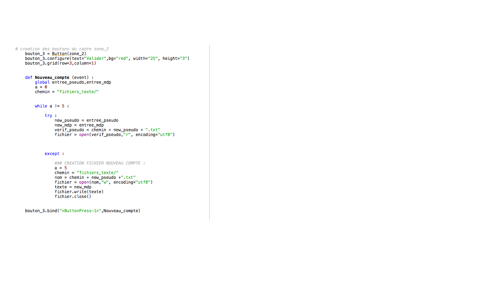

Ce projet a pris naissance un jour calme de décembre.
Nous voulions faire quelque chose de jamais vu avec une programmation sans limites.
Notre projet c'est un Casino !! Nous l'appelerons Casino L&M
Nous allons produire une roulette, des machines a sous, un black jack et bien plus encore ...
L'interface graphique comportera tout d'abord un système d'identification pour que nos utilisateurs profitent d'une sauvegarde afin d'avoir une experience de jeu la plus agréable possible.
Par la suite le joueur sera dirigé vers un menu où il pourra choisir le jeu auquel il veut jouer.
Afin de réussir ce projet nous devrons apprendre les règles du casino, se perfectionner dans les interfaces graphiques et dans la programmation en général.
Voici un calendrier prévisionnel des différentes étapes du projets (insérer une image) :
Aujourd'hui nous voulons adapter notre système d'identification avec une interface graphique.
Aujourd'hui nous voulons adapter notre système d'identification avec une interface graphique.

Le problème ici est que la fonction que nous avons crée sans interface graphique n'a aucun effet lorsque on la met dans une fonction pour ensuite l'activer avec un bouton.
Aujourd'hui nous avons presque finalisé le système d'identification
Nous avons eu du mal à faire reconnaitre le mot de passe et le pseudo dans tkinter, pour la semaine prochaine nous allons continuer à travailler pour finaliser le systeme ID et commencer le blackjack et la machine à sous.
Medhi a travaillé sur la création d'une nouvelle fenêtre lorsque l'on est connecté ainsi que sur la résolution du problème de pseudo et de mot de passe. Voici une copie d'écran du travail réalisé :

Paul a travaillé sur la résolution du problème de pseudo et de mot de passe et sur l'appel de chaque fonction au bon endroit. Voici une copie d'écran du travail réalisé :

Nous devons poursuivre nos recherches sur la fin du systeme et les fonctions en général.
Aujourd'hui nous avons terminé le système d'identification en le rendant complétement fonctionnel et en optimisant le code. Nous avons aussi commencé les jeux de notre casino tel que la machine a sous.
Medhi qui a travaillé sur la machine a sous chez lui, a continué de travailler sur le programme et surtout sur l'interface graphique.

Paul a finalisé le programme du système identification et réglé tous les problèmes existants. Il va commencer le blackjack.

Nous allons continuer la machine à sous et le blackjack
Aujourd'hui nous voulons finaliser l'aspect graphique et algorithmique de la machine à sous ainsi que commencer le blackjack
Medhi a presque finalisé la base de la machine à sous. Voici une copie d'écran du travail réalisé :

Paul à commencé le blackjack et a relié chaque menu.

Nous allons travailler ce week end pour terminer la machine à sous et le blackjack.
Paul a travaillé chez lui pour faire un menu de joueur et a continué le blackjack. Aujourd'hui nous allons continuer le blackjack et avancer sur la machine à sous.
Medhi a presque finalisé la de la machine à sous et il a commencé à réfléchir sur le systeme de point. Voici une copie d'écran du travail réalisé :

Paul a continué le blackjack.

Nous allons travailler ce week end pour terminer la machine à sous et le blackjack.
Paul a terminé le programme du blackjack en sequentiel. Medhi quant à lui a continué a approfondir la programmation de la machine à sous qu'il a bientot terminé et a prit en photo les cartes pour le blackjack. Aujourd'hui nous allons commencer le blackjack en evenementielle et essayer de terminer la machine à sous.
Medhi a presque finalisé la de la machine à sous néanmoins il rencontre des problèmes.
Paul a commencé le design du blackjack en evenementielle.

Nous allons travailler ce week end pour continuer et si possible terminer la machine à sous et le blackjack.
Paul a presque terminé le programme du blackjack en événementiel. Medhi quant à lui a continué la programmation de la machine à sous, son animation est finie, il ne reste plus qu'à programmer la valeur de chaque image. Aujourd'hui nous allons continuer le blackjack et essayer de terminer la machine à sous.
Medhi à l'aide de Paul a résolu le problème majeur de ce programme.

Paul a finalisé l'aspect graphique .

Medhi va terminer la machine à sous et commencer les bruitages. Paul va continuer le blackjack.